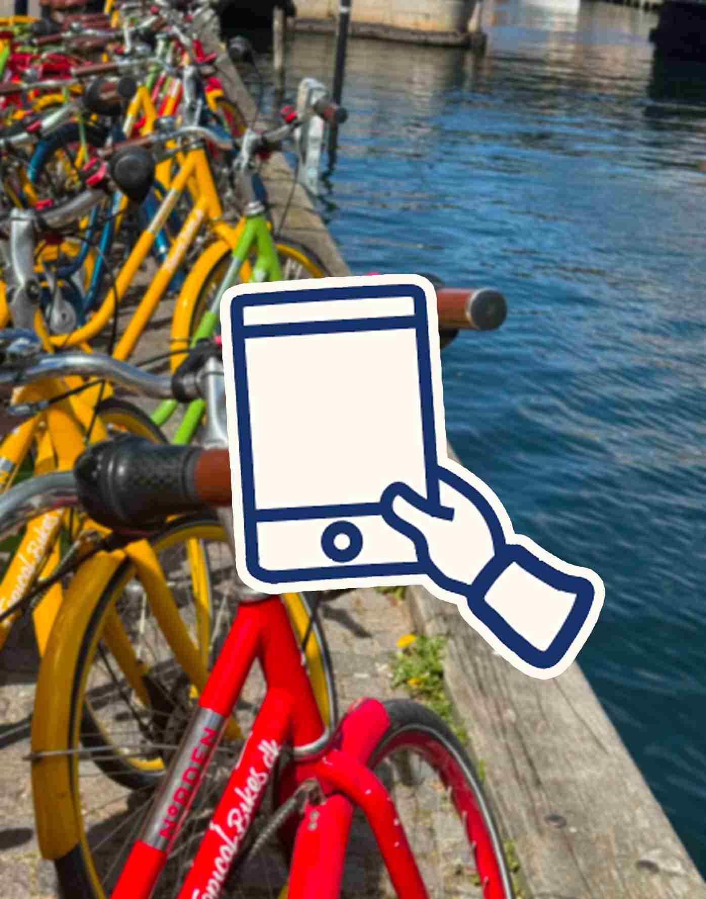

Et vigtigt aspekt af branding er din genkendelighed. Er der en rød tråd mellem det du poster, sådan at hvis man ser dit content at man kan genkende at det er dig uden selv at undersøge det? Vi vil hjælpe dig med nogle tips og triks til simpelt at skabe genkendelighed på tværs af Sociale medier
Vi tænker, at du måske allerede har godt styr på din målgruppe, men vi vil gerne hjælpe dig med at nå endnu længere ud på sociale medier. Det er vigtigt at følge med i trends, da de både kan hjælpe med at nå nyt publikum og fastholde de følgere, man allerede har. Samtidig er det vigtigt at lave content, som målgruppen kan relatere til og finde interessant. Derfor er det en fordel at holde en stabil retning på sin profil, da det skaber genkendelighed og loyalitet hos følgerne.
For at finde sin målgruppe skal man først forstå, hvem man ønsker at kommunikere til. Det handler ikke kun om alder og køn, men også om interesser, vaner og hvilket content målgruppen engagerer sig i. En god måde at lære sin målgruppe bedre at kende på er ved at se på, hvilke opslag der performer godt, både på ens egen profil og hos lignende profiler.
Når man kender sin målgruppe, handler det om at skabe relevant og værdifuldt content. Trends kan være en god måde at skabe synlighed på, men det er vigtigt, at de stadig passer til virksomhedens stil og identitet. Hvis man skifter retning for ofte, kan det forvirre følgerne og gøre profilen mindre genkendelig.
Det er også vigtigt at være konsekvent i både tone, visuel stil og budskaber. Derudover kan man styrke relationen til målgruppen ved at være aktiv i kommentarfelter, bruge relevante hashtags og følge med i, hvilke platforme målgruppen bruger mest. Brugerundersøgelser og spørgeskemaer kan også være gode redskaber til at forstå følgernes interesser og behov bedre.

Trends er en god ting at holde øje med, og de findes i mange former. At sætte sig ind i trends og selv hoppe med på bølgen kan få din virksomhed til at virke relevant, moderne og mere relaterbar for forbrugeren. Trends kan samtidig være med til at skabe en stærkere relation til din målgruppe, fordi du viser, at du følger med i det, der rører sig lige nu. Det kan dog hurtigt virke uoverskueligt at følge med i, hvilke trends der hitter, og hvilke der passer til netop din virksomhed. Det er også forskelligt, hvilke trends man vælger at bruge i sit content, det vigtigste er, at det føles autentisk og passer til dit brand. Derfor har vi samlet en række Instagram og TikTok-profiler, du kan følge, hvis du vil holde dig opdateret på nye trends, populære lyde, content-idéer og tendenser på sociale medier. Samtidig er det en fordel at planlægge sit content i god tid og skabe en struktur for sine opslag. Når du arbejder med en contentplan, bliver det lettere at kombinere trends med dit eget indhold, så din profil både virker aktuel og gennemtænkt. En plan kan for eksempel indeholde faste typer opslag, relevante trenddage, kampagner og idéer til reels eller TikToks.

Æstetik spiller en stor rolle på sociale medier, da det ofte er det første, brugerne lægger mærke til. En gennemført og genkendelig stil kan gøre en profil mere professionel, skabe troværdighed og gøre det lettere for målgruppen at huske virksomheden. På sociale medier handler æstetik ikke om at være perfekt, men om at være konsekvent i sit visuelle udtryk. For at skabe en god æstetik er det vigtigt at finde ud af, hvilket udtryk man ønsker, at profilen skal have. Det kan være en god idé at finde inspiration fra andre profiler eller brands, man synes fungerer godt. Herefter kan man vælge en fast farvepalette, bestemte skrifttyper og en redigeringsstil, så opslagene får et ensartet look. Det er også vigtigt at tænke over, hvilke billeder og videoer man deler. Nogle profiler har et minimalistisk og roligt udtryk, mens andre er mere farverige og kreative. Det vigtigste er, at stilen passer til virksomheden og målgruppen. Planlægning kan hjælpe med at skabe en flot og sammenhængende profil. Mange vælger at planlægge deres opslag på forhånd for at sikre, at indholdet passer godt sammen. Samtidig er det vigtigt, at æstetikken føles naturlig og autentisk, så profilen afspejler virksomhedens personlighed og skaber en genkendelig identitet for følgerne.

Når du vælger at lave SoMe, er det en god ting at tage stilling til hvilke skrifttyper og farver du gerne vil have forbundet med din virksomhed. De er med til at skabe en genkendelighed og muligvis også skabe noget unikt, hvis du vælger en font som ikke er en af de fleste andre brugere. Med det sagt, behøver du heller ikke vælge en font som skiller sig meget ud. Det samme med farver, det er godt at vælge en unik farve, men det skal også være en farve der giver mening, og fungerer med kontraster. Det vigtigste er bare at du vælger enkelte fonte og farver og holder dig til det udtryk. Fonte: Vi anbefaler at du vælger 2 fonte, en til overskrifter og en til brødtekst. Her skal du vælge en font der er letlæselig, så du ikke taber brugeren fordi teksten er for besværlig at læse. Du kan holde dig til de default fonte der er på den platform du laver content i, eller du kan finde og downloade fonte gratis over nettet. Farver: Vi anbefaler at du ikke vælger for mange farver, men bare nogle enkelte, og så kan du ændre i nuancerne på dem. Farver er lidt sværere at arbejde med, da det er forskelligt og en farver fungere med dit billede, her er det godt at huske på, at farver ofte kan skabe en illusion, og du derfor gerne må bruge forskellige toner af farven, alt efter hvad du bruger den til. Det handler om at tilpasse farven, ikke content.